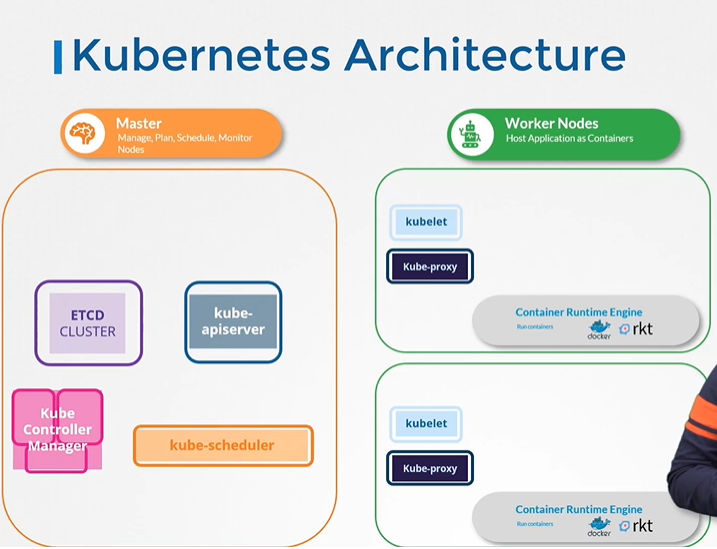

- Cluster Architecture:
- 
- MASTER NODE - Manage, plan, schedule, monitor
- WORKER NODES - Host application as containers
- ETCD - Database which stores time and event in key:value format
- kube-scheduler - Identifies the right node size, capacity, destination, type of containers, etc.
- controller manager - Job is to make sure that the container is available all the time, when there’s failure, it makes it avail.
- controller manager
- node controller
- replication controller
- kube-api server - Orchestrates all operations within a cluster (kube-scheduler + ETCD + Controller-Manager)
- Container Runtime Engines - runs the containers
- Docker
- rkt
- kubelet - Engine that runs on each node in a cluster, listens for instructions from kube-api server and deploys containers on the nodes, fetches info of nodes periodically to monitor status of node.
- kube-proxy server
- SUMMARY:
- MASTER NODE:
- ETCD - Stores information about the cluster
- kube-scheduler - Schedules applications or containers on the nodes
- Controllers - Takes care of different fucntions
- Node controller
- Replication controller
- kube-api Server - Orchestrates all operations within a cluster
- WORKER NODE:
- kubelet - Listens for instructions from the kube-apiserver and manages containers
- kube-proxy - Helps in enabling communication between services within the cluster
- Container Runtime Engine - Docker, rkt
- DOCKER vs. CONTAINER:

- ETCD:
- key-value store - each individual gets a document
- change of one document doesn’t affect others
- Listens on port 2379
- Control Client - etcdctl
- to store a key-value pair:
- ./etcdctl set key1 value1 #creates an entry in the database
- It stores the following info regarding cluster:
- Nodes
- Pods
- Roles
- Secrets
- Bindings
- Others
- 2 Ways of Setting up ETCD:
- From scratch - by downloading binaries
- --advertise-client-urls https://${INTERNAL_IP}:2379
- From kubeadm
- deploys ETCD as a POD
- Kube-API Server:
PODS WITH YAML:


NOTE: Indentation with 2 spaces instead of TAB Space!
Under metadata, we can only add name or label
Under spec, it is different for different kubernetes object
Under spec, we have list of containers
Under containers, we have a dictionary
POD:
pod-definition.yml - file
api-version: v1
kind: pod
metadata:
name: myapp-pod STRING
labels: DICTIONARY
app: myapp
tier: front-end
spec:
containers: LIST / ARRAY
- name: nginx-container DICTIONARY
image: nginx
- name: busybox
image: busybox
To create a pod:
- kubectl create -f pod-definition.yml
or
- kubectl apply -f pod-definition.yml
To view a pod:
- kubectl get pods
or
- kubectl describe pod myapp-pod or kubectl describe pod nginx
To view help related to pod:
- kubectl run --help
TEST:
- How many pods are there in the current namespace(default)?
- kubectl get pods → Displays the pod details and the number of pods
- Create a new pod with the
nginximage. - name: nginx
- kubeclt run nginx --image=nginx
- How many pods are created now? (Note: We have created a few more pods. So please check again.)
- kubectl get pods
- What is the image used to create the new pods? (You must look at one of the new pods in detail to figure this out.)
- kubectl get pods
- kubectl describe pod newpod-d5fr6

- Which nodes are these pods placed on? (You must look at all the pods in detail to figure this out.)
- kubectl get pods
- kubectl describe pod newpods-qnf22

- Answer: controlplane
- How many containers are in pod webapp?
- kubectl get pods
- kubectl describe pod webapp

- Answer: 2 (Containers: nginx & agentx)
- What images are used in the new
webapppod? (You must look at all the pods in detail to figure this out.) - kubectl get pods
- kubectl describe pod webapp

- Answer: nginx & agentx
- What is the state of the container
agentxin the podwebapp? (Wait for it to finish theContainerCreatingstate) - kubectl get pods
- kubectl describe pod webapp

- Why do you think the container
agentxin podwebappis in error? (Try to figure it out from the events section of the pod.) - NGINX application isn't configured to communicate to this image
- The application inside this image is faulty
- A Docker image with this name doesn't exist on Docker Hub
- Faulty Kubernetes cluster
- kubectl get pods
- kubectl describe pod webapp

- Answer: A Docker image with this name doesn't exist on Docker Hub
- What does the
READYcolumn in the output of thekubectl get podscommand indicate? - Running Pods/Total Pods
- Total Containers in POD/Running Containers in POD
- Running Containers in POD/Total Containers in POD
- Total Pods/Running Pods
- kubectl get pods

- Answer: Running Containers in POD/Total Containers in POD
- Delete the
webappPod. (Once deleted, wait for the pod to fully terminate.) - Name: webapp
- kubectl delete --help
- kubectl delete pod webapp

- Create a new pod with the name
redisand the imageredis123. (Use a pod-definition YAML file. And yes the image name is wrong!) - kubectl run redis --image=redis123 --dry-run=client -o yaml (This will create a code like shown below)
- apiVersion: v1
kind: Pod
metadata:
creationTimestamp: null
labels:
run: redis
name: redis
spec:
containers:
- image: redis123
name: redis
resources: {}
dnsPolicy: ClusterFirst
restartPolicy: Always
status: {} - kubectl run redis --image=redis123 --dry-run=client -o yaml > redis-definition.yaml
- (This creates a yaml file called redis-definition.yaml with above code inside it.)
- kubectl create -f redis-definition.yaml
- (This creates a pod with the redis-definition.yaml file.)
- Now change the image on this pod to
redis. (Once done, the pod should be in arunningstate.) - Name: redis
- Image name: redis
- kubectl get pods
- cat redis-definition.yaml (To check for image, here it would display image: redis123)
- nano redis-definition.yaml (Change image: redis)
- kubectl apply -f redis-definition.yaml

RC: (REPLICATION CONTROLLER)
rc-definition.yml =>file
NOTE: Under spec for rc-definition.yml - file,
we have the ‘metadata of pod’...!
api-version: v1
kind: ReplicationController
metadata: METADATA OF REPLICATION CONTROLLER
name: myapp-rc STRING
labels: DICTIONARY
app: myapp
tier: front-end
spec:
template:
metadata: METADATA OF THE POD
name: myapp-pod
labels:
app: myapp
type: frontend
spec:
containers:
- name: nginx-container
image: nginx
replicas: 3
To create a replication controller:
- kubectl create -f rc-definition.yml
To view created replication controller:
- kubectl get replicationcontroller
To view pods created by replication contoller: (All their names would start same)
- kubectl get pods
REPLICASET: (Used for scaling, lil different from Replication Contoller)
replicaset-definition.yml =>file
NOTE: api-version is ‘apps/v1’
Under replicas label, we have an additional label called ‘matchLabels’.
The rest of the contents are same as of the contents on rc-definition.yml.
api-version: apps/v1
kind: ReplicaSet
metadata: METADATA OF REPLICATION CONTROLLER
name: myapp-replicaset STRING
labels: DICTIONARY
app: myapp
tier: front-end
spec:
template:
metadata: METADATA OF THE POD
name: myapp-pod
labels:
app: myapp
type: frontend
spec:
containers:
- name: nginx-container
image: nginx
replicas: 3
selector:
matchLabels:
type: front-end
To create a replicaset:
- kubectl create -f replicaset-definition.yml
To view created replicaset:
- kubectl get replicaset
To view pods created by replicaset: (All their names would start same)
- kubectl get pods
To scale a replicaset:
- kubectl scale -replicas=6 -f replicaset-definition.yml
or
- kubectl scale rs new-replica-set --replicas=5